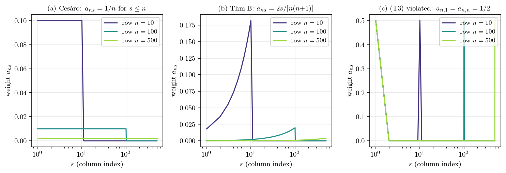
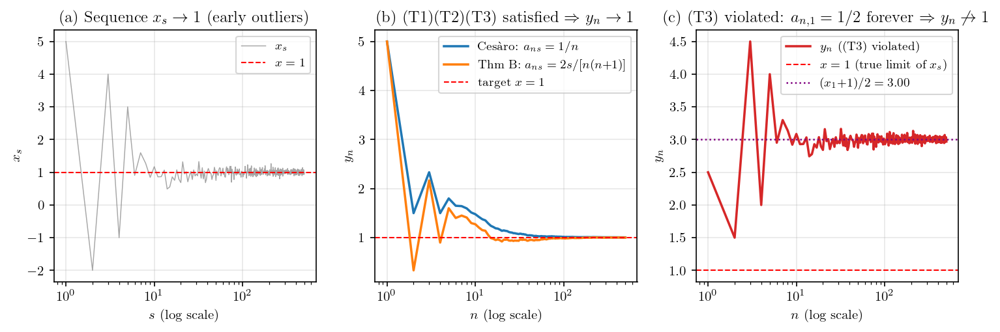

연구 ▷ HST ▷ Toeplitz Lemma 직관 — 가중평균은 무게 따라간다
ABC증명 블로그 Theorem~B 풀이에서 한 번 등장했던 외부 보조정리이다. 본 글에서는 그 정리가 왜 그렇게 성립하는지 만 직관 위주로 풀어쓴다.
Toeplitz Lemma (Knopp 1928, §43). 실수 배열 \(\{a_{ns}\}_{n, s \geq 1} \subset \mathbb{R}\) 이 다음 세 조건을 만족한다 하자.
(T1) 어떤 상수 \(c < \infty\) 가 존재해 \(\sum_{s=1}^{\infty} |a_{ns}| \leq c\) 가 모든 \(n \geq 1\) 에서 성립한다.
(T2) \(\sum_{s=1}^{\infty} a_{ns} \to 1\) as \(n \to \infty\).
(T3) 각 고정된 \(s \geq 1\) 에 대해 \(a_{ns} \to 0\) as \(n \to \infty\).
그러면 임의의 수렴 수열 \(x_s \to x \in \mathbb{R}\) 에 대해 \[ y_n \;:=\; \sum_{s=1}^{\infty} a_{ns}\, x_s \;\xrightarrow{n \to \infty}\; x. \]
요약하면 “수렴 수열의 가중평균은 그 극한으로 수렴” — 단, 가중치 배열이 (T1)(T2)(T3) 을 만족하면.
가장 자명한 인스턴스는 산술평균 (Cesàro) 이다. 가중치를 \(a_{ns} = \tfrac{1}{n}\,\mathbf{1}\{s \leq n\}\) 으로 잡으면 \(y_n = (x_1 + \cdots + x_n)/n\) 이 정확히 그냥 산술평균이 된다. \(N = 20\) 으로 직접 행렬을 만들고 세 점검값을 출력해 보자.
import numpy as np
np.set_printoptions(precision=3, suppress=True, linewidth=200)
def w_cesaro(n, N):
w = np.zeros(N); w[:n] = 1.0 / n
return w
N = 20
A = np.array([w_cesaro(n, N) for n in range(1, N + 1)])
print("a_{ns} 행렬:")
print(A)
print(f" Σ|a_ns| (T1 check) : {np.abs(A).sum(axis=1)}")
print(f" Σa_ns (T2 check) : {A.sum(axis=1)}")
print(f" col s=1 (T3 check) : {A[:, 0]}")a_{ns} 행렬:
[[1. 0. 0. 0. 0. 0. 0. 0. 0. 0. 0. 0. 0. 0. 0. 0. 0. 0. 0. 0. ]
[0.5 0.5 0. 0. 0. 0. 0. 0. 0. 0. 0. 0. 0. 0. 0. 0. 0. 0. 0. 0. ]
[0.333 0.333 0.333 0. 0. 0. 0. 0. 0. 0. 0. 0. 0. 0. 0. 0. 0. 0. 0. 0. ]
[0.25 0.25 0.25 0.25 0. 0. 0. 0. 0. 0. 0. 0. 0. 0. 0. 0. 0. 0. 0. 0. ]
[0.2 0.2 0.2 0.2 0.2 0. 0. 0. 0. 0. 0. 0. 0. 0. 0. 0. 0. 0. 0. 0. ]
[0.167 0.167 0.167 0.167 0.167 0.167 0. 0. 0. 0. 0. 0. 0. 0. 0. 0. 0. 0. 0. 0. ]
[0.143 0.143 0.143 0.143 0.143 0.143 0.143 0. 0. 0. 0. 0. 0. 0. 0. 0. 0. 0. 0. 0. ]
[0.125 0.125 0.125 0.125 0.125 0.125 0.125 0.125 0. 0. 0. 0. 0. 0. 0. 0. 0. 0. 0. 0. ]
[0.111 0.111 0.111 0.111 0.111 0.111 0.111 0.111 0.111 0. 0. 0. 0. 0. 0. 0. 0. 0. 0. 0. ]
[0.1 0.1 0.1 0.1 0.1 0.1 0.1 0.1 0.1 0.1 0. 0. 0. 0. 0. 0. 0. 0. 0. 0. ]
[0.091 0.091 0.091 0.091 0.091 0.091 0.091 0.091 0.091 0.091 0.091 0. 0. 0. 0. 0. 0. 0. 0. 0. ]
[0.083 0.083 0.083 0.083 0.083 0.083 0.083 0.083 0.083 0.083 0.083 0.083 0. 0. 0. 0. 0. 0. 0. 0. ]
[0.077 0.077 0.077 0.077 0.077 0.077 0.077 0.077 0.077 0.077 0.077 0.077 0.077 0. 0. 0. 0. 0. 0. 0. ]
[0.071 0.071 0.071 0.071 0.071 0.071 0.071 0.071 0.071 0.071 0.071 0.071 0.071 0.071 0. 0. 0. 0. 0. 0. ]
[0.067 0.067 0.067 0.067 0.067 0.067 0.067 0.067 0.067 0.067 0.067 0.067 0.067 0.067 0.067 0. 0. 0. 0. 0. ]
[0.062 0.062 0.062 0.062 0.062 0.062 0.062 0.062 0.062 0.062 0.062 0.062 0.062 0.062 0.062 0.062 0. 0. 0. 0. ]
[0.059 0.059 0.059 0.059 0.059 0.059 0.059 0.059 0.059 0.059 0.059 0.059 0.059 0.059 0.059 0.059 0.059 0. 0. 0. ]
[0.056 0.056 0.056 0.056 0.056 0.056 0.056 0.056 0.056 0.056 0.056 0.056 0.056 0.056 0.056 0.056 0.056 0.056 0. 0. ]
[0.053 0.053 0.053 0.053 0.053 0.053 0.053 0.053 0.053 0.053 0.053 0.053 0.053 0.053 0.053 0.053 0.053 0.053 0.053 0. ]
[0.05 0.05 0.05 0.05 0.05 0.05 0.05 0.05 0.05 0.05 0.05 0.05 0.05 0.05 0.05 0.05 0.05 0.05 0.05 0.05 ]]
Σ|a_ns| (T1 check) : [1. 1. 1. 1. 1. 1. 1. 1. 1. 1. 1. 1. 1. 1. 1. 1. 1. 1. 1. 1.]
Σa_ns (T2 check) : [1. 1. 1. 1. 1. 1. 1. 1. 1. 1. 1. 1. 1. 1. 1. 1. 1. 1. 1. 1.]
col s=1 (T3 check) : [1. 0.5 0.333 0.25 0.2 0.167 0.143 0.125 0.111 0.1 0.091 0.083 0.077 0.071 0.067 0.062 0.059 0.056 0.053 0.05 ]세 점검값을 모두 통과한다. (T1) 행 합 절댓값이 모두 1 로 bound 되어 있고 (\(c = 1\)), (T2) 행 합이 모두 1 로 고정이라 \(n \to \infty\) 에서도 1 (\(\to 1\)), (T3) column \(s = 1\) 이 \(1, \tfrac{1}{2}, \tfrac{1}{3}, \ldots, \tfrac{1}{20}\) 로 단조 감소해 결국 \(1/n \to 0\). 행렬 자체도 “삼각형” 모양 — 행 \(n\) 이 증가할수록 무게가 점점 작은 값으로 펴지면서 column 별 가중치는 사라진다. 따라서 Toeplitz Lemma 결론에 의해 \(x_s \to x\) 면 \(y_n \to x\) — 누구나 직관적으로 동의하는 “산술평균도 극한으로 수렴” 명제다. Toeplitz Lemma 는 이 자명한 사실을 “가중치 모양만 (T1)(T2)(T3) 만족하면 다 OK” 로 일반화한 것이다.
한 가지 예제만으로는 부족하니 실수 배열 \(a_{ns}\) 의 다양한 사례를 한꺼번에 정의하고 (T1)(T2)(T3) 만족·위반 여부를 ✓/✗ 자동 판정해 보자. 만족 후보 세 개 (C1~C3) 와 일부러 깨뜨린 위반 후보 세 개 (D1~D3) 를 함께 본다.
\[ \begin{aligned} \text{C1 Cesàro} &:\quad a_{ns} = \tfrac{1}{n}\,\mathbf{1}\{s \leq n\}, \\ \text{C2 Thm B} &:\quad a_{ns} = \tfrac{2s}{n(n+1)}\,\mathbf{1}\{s \leq n\}, \\ \text{C3 Identity} &:\quad a_{ns} = \mathbf{1}\{s = n\}, \\ \text{D1 (T1) viol.} &:\quad a_{ns} = \mathbf{1}\{s \leq n\}, \\ \text{D2 (T2) viol.} &:\quad a_{ns} = \tfrac{1}{2n}\,\mathbf{1}\{s \leq n\}, \\ \text{D3 (T3) viol.} &:\quad a_{ns} = \tfrac{1}{2}\bigl(\mathbf{1}\{s=1\} + \mathbf{1}\{s=n\}\bigr). \end{aligned} \]
각 case 마다 큰 \(N = 1000\) 에서 행 \(n = N\) 의 점검 세 값 — \(\sum_s |a_{ns}|\) (T1), \(\sum_s a_{ns}\) (T2), \(a_{n,1}\) (T3) — 을 계산해 자동으로 ✓/✗ 마크를 붙인다. Julia 로 짜면 다음과 같다.
using Printf
w_cesaro(n, N) = (w = zeros(N); w[1:n] .= 1.0/n; w)
w_thm_b(n, N) = (w = zeros(N); w[1:n] .= 2.0 .* (1:n) ./ (n*(n+1)); w)
w_identity(n, N) = (w = zeros(N); w[n] = 1.0; w)
w_t1_viol(n, N) = (w = zeros(N); w[1:n] .= 1.0; w)
w_t2_viol(n, N) = (w = zeros(N); w[1:n] .= 1.0/(2n); w)
w_t3_viol(n, N) = (w = zeros(N); w[1] = 0.5; w[n] = 0.5; w)
cases = [
("C1 Cesàro", w_cesaro, "(1/n)·1{s≤n}"),
("C2 Thm B", w_thm_b, "2s/[n(n+1)]·1{s≤n}"),
("C3 Identity", w_identity, "1{s=n}"),
("D1 (T1) viol.", w_t1_viol, "1{s≤n}"),
("D2 (T2) viol.", w_t2_viol, "1/(2n)·1{s≤n}"),
("D3 (T3) viol.", w_t3_viol, "1/2·(1{s=1}+1{s=n})"),
]
N = 1000
@printf("%-15s | %-22s | %9s (T1) | %9s (T2) | %10s (T3)\n",
"case", "a_ns", "Σ|a_ns|", "Σa_ns", "a_{n,1}")
println("-"^95)
for (name, fn, expr) in cases
w = fn(N, N)
a = sum(abs, w)
s = sum(w)
c1 = w[1]
t1 = a < 100 ? "✓" : "✗"
t2 = abs(s - 1) < 0.01 ? "✓" : "✗"
t3 = abs(c1) < 0.01 ? "✓" : "✗"
@printf("%-15s | %-22s | %9.3f %s | %9.3f %s | %10.3e %s\n",
name, expr, a, t1, s, t2, c1, t3)
end출력:
case | a_ns | Σ|a_ns| (T1) | Σa_ns (T2) | a_{n,1} (T3)
-----------------------------------------------------------------------------------------------
C1 Cesàro | (1/n)·1{s≤n} | 1.000 ✓ | 1.000 ✓ | 1.000e-03 ✓
C2 Thm B | 2s/[n(n+1)]·1{s≤n} | 1.000 ✓ | 1.000 ✓ | 1.998e-06 ✓
C3 Identity | 1{s=n} | 1.000 ✓ | 1.000 ✓ | 0.000e+00 ✓
D1 (T1) viol. | 1{s≤n} | 1000.000 ✗ | 1000.000 ✗ | 1.000e+00 ✗
D2 (T2) viol. | 1/(2n)·1{s≤n} | 0.500 ✓ | 0.500 ✗ | 5.000e-04 ✓
D3 (T3) viol. | 1/2·(1{s=1}+1{s=n}) | 1.000 ✓ | 1.000 ✓ | 5.000e-01 ✗C1~C3 (Cesàro, Thm B, Identity) 는 세 조건을 모두 통과한다 — Toeplitz 결론에 의해 \(y_n \to x\). D1 ((T1) 위반) 은 가중치 합이 \(n = 1000\) 에서 그대로 \(1000\) 으로 발산하여 bound 가 없고, 가중평균이 단순 합이 되어 발산한다. D2 ((T2) 위반) 는 (T1)(T3) 은 만족하지만 합이 0.5 로 고정이라 \(y_n \to x/2\) 로 배수 변질된다. D3 ((T3) 위반) 은 합과 bound 는 OK 지만 column \(s = 1\) 의 값이 영원히 \(0.5\) 로 사라지지 않아 옛 항 \(x_1\) 이 평균에 끝까지 살아남아 \(y_n \to (x_1 + x)/2\) 로 잘못된 극한에 멈춘다.
한 줄로 직관을 잡으면 가중평균은 무게가 실린 데로 따라간다. (T3) 에 의해 무게가 점점 “이미 \(x\) 에 가까워진 항들” 쪽으로만 실리니까 평균도 \(x\) 로 간다. 세 조건은 각각 그 직관이 깨질 수 있는 시나리오를 막는 안전장치다. (T1) 은 가중치 절댓값 합이 어떤 상수 \(c\) 안에 묶이게 해서 “\(x\) 근처로 가도 가중치 합이 발산하면 곱해진 평균도 발산” 하는 일을 막는다. (T2) 는 가중치 총합이 1 로 수렴하게 해서 평균이 평균답게 작동하도록 한다 (없으면 \(cx\) 같은 배수로 수렴할 수 있다). (T3) 은 어떤 고정된 위치 \(s\) 의 가중치도 결국 0 으로 사라지게 해서 “초반에 \(x\) 와 동떨어진 \(x_1, x_2, \ldots\) 가 끝까지 무게 유지하며 평균을 그쪽으로 끌고 가는” 일을 막는다.
이 직관을 시험 성적 비유로 풀어보자. 학생 한 명의 시험 성적을 가중평균으로 평가한다고 하자. \(x_s\) 가 \(s\)번째 시험 점수, \(a_{ns}\) 가 학기 \(n\) 시점에 \(s\)번째 시험에 부여되는 가중치, \(y_n\) 이 학기 \(n\) 시점의 평가 점수다. 학기말 실력이 \(x\) 점으로 수렴 — 초반 시험은 들쭉날쭉했고 후반 시험은 다 \(x\) 근처라고 하자. (T3) “옛날 시험 가중치는 학기 진행될수록 0 으로” 는 초반의 들쭉날쭉했던 점수가 학기말 평가에 거의 안 반영되게 한다. (T2) “가중치 총합은 1” 은 평균이 평균답게 작동하도록 보장한다 (1.5배·0.7배 평균으로 변질되지 않는다). (T1) “시험 가중치 절댓값 합이 상수 안에 묶임” 은 특정 시험 또는 그 묶음이 비정상적으로 부풀려지지 않게 한다. 결과적으로 학기말 평가는 후반 시험들 (이미 \(x\) 근처) 의 가중평균이라 \(x\) 로 수렴한다.
가장 익숙한 특수 케이스는 산술평균 (Cesàro) 이다. 가중치를 단순히 \[ a_{ns} \;=\; \begin{cases} 1/n, & s \leq n, \\ 0, & s > n, \end{cases} \] 로 잡으면 \(y_n = (x_1 + \cdots + x_n)/n\), 즉 그냥 산술평균이다. 세 조건은 모두 통과한다. \[ \begin{aligned} \text{(T1)} &\quad \sum_{s=1}^\infty |a_{ns}| = \sum_{s=1}^n \tfrac{1}{n} = 1 \leq 1 && (\because c = 1) \\ \text{(T2)} &\quad \sum_{s=1}^\infty a_{ns} = 1 \to 1 && (\because \text{고정 1}) \\ \text{(T3)} &\quad a_{ns} = \tfrac{1}{n} \to 0 \quad \text{각 고정 } s && (\because n \to \infty) \end{aligned} \] 그러므로 “\(x_s \to x\) 이면 산술평균도 \(x\)” — 누구나 직관적으로 동의하는 명제다 (앞쪽 몇 개 이상한 값들은 \(n\) 으로 나누면서 희석된다). Toeplitz Lemma 는 이 직관을 “가중치 모양만 (T1)(T2)(T3) 만족하면 다 OK” 로 일반화한 것이다.
세 조건 각각이 어떻게 작동하는지 더 명확히 하려면, 각 조건이 위반될 때 어떤 가중치 행렬이 만들어지고 어떤 점검 값이 깨지는지 작은 \(N=5\) 로 비교해 보는 것이 좋다. Cesàro 와 세 위반 케이스를 한꺼번에 정의하고, 매 행에 대한 점검 세 값 — \(\sum_s |a_{ns}|\) (T1), \(\sum_s a_{ns}\) (T2), column \(s=1\) 의 값 (T3) — 을 같이 print 한다.
\[ \begin{aligned} a_{ns}^{\text{Cesàro}} &= \tfrac{1}{n}\,\mathbf{1}\{s \leq n\}, & a_{ns}^{\text{(T1) viol.}} &= \mathbf{1}\{s \leq n\}, \\ a_{ns}^{\text{(T2) viol.}} &= \tfrac{1}{2n}\,\mathbf{1}\{s \leq n\}, & a_{ns}^{\text{(T3) viol.}} &= \tfrac{1}{2}\bigl(\mathbf{1}\{s=1\} + \mathbf{1}\{s=n\}\bigr). \end{aligned} \]
import numpy as np
np.set_printoptions(precision=3, suppress=True, linewidth=80)
def w_cesaro(n, N): # 모두 만족
w = np.zeros(N); w[:n] = 1.0 / n
return w
def w_t1_violation(n, N): # Σ|a_ns| = n → 발산
w = np.zeros(N); w[:n] = 1.0
return w
def w_t2_violation(n, N): # Σa_ns = 1/2 → 1 아님
w = np.zeros(N); w[:n] = 1.0 / (2 * n)
return w
def w_t3_violation(n, N): # col s=1 가중치 영원히 1/2
w = np.zeros(N); w[0] = 0.5; w[n - 1] = 0.5
return w
N = 5
cases = [("Cesàro (모두 만족)", w_cesaro),
("(T1) 위반: a_ns = 1 for s≤n", w_t1_violation),
("(T2) 위반: a_ns = 1/(2n) for s≤n", w_t2_violation),
("(T3) 위반: a_{n,1} = a_{n,n} = 1/2", w_t3_violation)]
for name, fn in cases:
A = np.array([fn(n, N) for n in range(1, N + 1)])
print(f"=== {name} ===")
print(A)
print(f" row 합 Σ|a_ns| (T1) : {np.abs(A).sum(axis=1)}")
print(f" row 합 Σa_ns (T2) : {A.sum(axis=1)}")
print(f" col s=1 (T3) : {A[:, 0]}")
print()출력:
=== Cesàro (모두 만족) ===
[[1. 0. 0. 0. 0. ]
[0.5 0.5 0. 0. 0. ]
[0.333 0.333 0.333 0. 0. ]
[0.25 0.25 0.25 0.25 0. ]
[0.2 0.2 0.2 0.2 0.2 ]]
row 합 Σ|a_ns| (T1) : [1. 1. 1. 1. 1.]
row 합 Σa_ns (T2) : [1. 1. 1. 1. 1.]
col s=1 (T3) : [1. 0.5 0.333 0.25 0.2 ]
=== (T1) 위반: a_ns = 1 for s≤n ===
[[1. 0. 0. 0. 0.]
[1. 1. 0. 0. 0.]
[1. 1. 1. 0. 0.]
[1. 1. 1. 1. 0.]
[1. 1. 1. 1. 1.]]
row 합 Σ|a_ns| (T1) : [1. 2. 3. 4. 5.]
row 합 Σa_ns (T2) : [1. 2. 3. 4. 5.]
col s=1 (T3) : [1. 1. 1. 1. 1.]
=== (T2) 위반: a_ns = 1/(2n) for s≤n ===
[[0.5 0. 0. 0. 0. ]
[0.25 0.25 0. 0. 0. ]
[0.167 0.167 0.167 0. 0. ]
[0.125 0.125 0.125 0.125 0. ]
[0.1 0.1 0.1 0.1 0.1 ]]
row 합 Σ|a_ns| (T1) : [0.5 0.5 0.5 0.5 0.5]
row 합 Σa_ns (T2) : [0.5 0.5 0.5 0.5 0.5]
col s=1 (T3) : [0.5 0.25 0.167 0.125 0.1 ]
=== (T3) 위반: a_{n,1} = a_{n,n} = 1/2 ===
[[0.5 0. 0. 0. 0. ]
[0.5 0.5 0. 0. 0. ]
[0.5 0. 0.5 0. 0. ]
[0.5 0. 0. 0.5 0. ]
[0.5 0. 0. 0. 0.5]]
row 합 Σ|a_ns| (T1) : [0.5 1. 1. 1. 1. ]
row 합 Σa_ns (T2) : [0.5 1. 1. 1. 1. ]
col s=1 (T3) : [0.5 0.5 0.5 0.5 0.5]세 위반 케이스 각각의 직관은 다음과 같다. (T1) 위반 — 가중치를 \(a_{ns} = \mathbf{1}\{s \leq n\}\) 으로 놓으면 행 합이 \(1, 2, 3, 4, 5, \ldots\) 로 \(n\) 에 비례해 발산한다. (T1) 의 “상수 \(c\) 안에 묶임” 이 깨져, 가중평균은 평균이 아니라 단순 합 \(y_n = \sum_{s=1}^n x_s\) 가 되어 \(x_s \to x \neq 0\) 라면 발산한다 (덤으로 이 경우 (T2) 도 동시 위반이지만 (T1) 의 한계가 가장 먼저 보인다). (T2) 위반 — 가중치를 \(a_{ns} = \frac{1}{2n}\mathbf{1}\{s \leq n\}\) 로 놓으면 (T1) 은 0.5 로 bounded 라 만족, (T3) 도 column 1 이 \(0.5, 0.25, 0.167, \ldots \to 0\) 으로 만족, 하지만 행 합이 \(0.5, 0.5, \ldots\) 로 1 이 아닌 0.5 로 수렴한다. 결과적으로 가중평균이 \(y_n \to x/2\), 진짜 평균이 아닌 배수로 수렴한다. (T3) 위반 — 행 합과 절댓값 합은 (작은 \(n\) 한두 줄 제외) 모두 1 로 (T1)(T2) 둘 다 만족하지만, column \(s=1\) 의 값이 영원히 \(1/2\) 로 사라지지 않는다. 옛 항 \(x_1\) 이 모든 시점에서 절반의 무게로 살아남아 \(y_n \to (x_1 + x)/2\) 로 수렴한다 (\(x_1 \neq x\) 면 잘못된 극한). 세 점검값을 같은 코드에서 한꺼번에 읽으면 어느 조건이 어디서 깨지는지 한 눈에 보인다.
증명도 직관 그대로 따라간다. 임의의 \(\epsilon > 0\) 을 고정하자. \(x_s \to x\) 이니 어떤 \(S\) 가 존재해 \(s \geq S\) 면 \(|x_s - x| < \epsilon\) 이다. \(y_n - x\) 를 다음과 같이 분해한다. \[ \begin{aligned} y_n - x &= \sum_{s=1}^\infty a_{ns} x_s - x && (\because y_n \text{ 정의}) \\ &= \sum_{s=1}^\infty a_{ns}(x_s - x) + \Bigl(\sum_{s=1}^\infty a_{ns} - 1\Bigr) x && (\because x \sum_s a_{ns} \text{ 더하고 빼기}) \\ &= \underbrace{\sum_{s < S} a_{ns}(x_s - x)}_{=:\,T_1} + \underbrace{\sum_{s \geq S} a_{ns}(x_s - x)}_{=:\,T_2} + \underbrace{\Bigl(\sum_s a_{ns} - 1\Bigr) x}_{=:\,T_3} \end{aligned} \] 세 항을 각각 bound 한다. \[ \begin{aligned} |T_1| &\leq \sum_{s < S} |a_{ns}| \cdot \max_{s < S} |x_s - x| && (\because \text{삼각부등식}) \\ \Rightarrow\ |T_1| &\xrightarrow{n \to \infty} 0 && (\because \text{(T3)},\ S \text{ 유한}) \\[2pt] |T_2| &\leq \epsilon \cdot \sum_{s \geq S} |a_{ns}| && (\because |x_s - x| < \epsilon \text{ for } s \geq S) \\ &\leq \epsilon \cdot c && (\because \text{(T1)}) \\[2pt] |T_3| &= \Bigl|\sum_s a_{ns} - 1\Bigr| \cdot |x| && (\because x \text{ 분리}) \\ \Rightarrow\ |T_3| &\xrightarrow{n \to \infty} 0 && (\because \text{(T2)}) \end{aligned} \] 합치면 \(\limsup_{n \to \infty} |y_n - x| \leq 0 + \epsilon\,c + 0 = \epsilon\,c\). \(\epsilon > 0\) 임의이므로 \(y_n \to x\). \(\square\)
증명에서 각 조건의 역할이 깔끔히 분리된다. (T3) 은 \(T_1\) 처리 — 앞쪽 항의 무게가 사라진다. (T1) 은 \(T_2\) 처리 — 뒤쪽 항이 \(\epsilon\)-가까워도 무한 합 가중치로 곱해지면 발산할 수 있는데 (T1) 이 그것을 막는다. (T2) 는 \(T_3\) 처리 — 총합이 1 로 가야 진짜 평균이 된다.
이 직관을 시뮬레이션으로 직접 확인해 보자. 본격적으로 가기 전에 두 인덱스 \(n\) 과 \(s\) 의 역할을 한 번 분리해두는 게 좋다. \(n\) 은 가중평균을 매기는 외부 시점 (시험 비유의 “학기 번호”) 이고, \(s\) 는 수열 자체의 항 인덱스 (“시험 번호”) 다. 가중치 \(a_{ns}\) 는 두 인덱스를 가진 행렬로, 매 \(n\) 마다 한 행 \(\{a_{ns}\}_{s \geq 1}\) 이 결정되고 그 행으로 \(x_s\) 를 가중평균한 것이 \(y_n\) 이다. 조건 (T3) “각 고정 \(s\) 에서 \(a_{ns} \to 0\)” 은 행렬을 위에서 아래로 (\(n\) 증가 방향) 내려갈 때 각 column 의 무게가 점점 사라진다는 뜻이다.
차이를 작은 \(N = 8\) 행렬을 직접 print 해 보면 한 눈에 확인할 수 있다. 자명한 산술평균 Cesàro 와 일부러 (T3) 을 깨뜨린 반례를 비교한다.
\[ a_{ns}^{\text{Cesàro}} \;=\; \tfrac{1}{n}\,\mathbf{1}\{s \leq n\}, \qquad a_{ns}^{\text{(T3) violated}} \;=\; \tfrac{1}{2}\bigl(\mathbf{1}\{s=1\} + \mathbf{1}\{s=n\}\bigr). \]
import numpy as np
np.set_printoptions(precision=3, suppress=True, linewidth=80)
def w_cesaro(n, N):
w = np.zeros(N); w[:n] = 1.0 / n
return w
def w_t3_violation(n, N):
w = np.zeros(N); w[0] = 0.5; w[n - 1] = 0.5
return w
N = 8
A_cesaro = np.array([w_cesaro(n, N) for n in range(1, N + 1)])
A_t3 = np.array([w_t3_violation(n, N) for n in range(1, N + 1)])A_cesaro ((T3) 만족) 의 출력:
[[1. 0. 0. 0. 0. 0. 0. 0. ]
[0.5 0.5 0. 0. 0. 0. 0. 0. ]
[0.333 0.333 0.333 0. 0. 0. 0. 0. ]
[0.25 0.25 0.25 0.25 0. 0. 0. 0. ]
[0.2 0.2 0.2 0.2 0.2 0. 0. 0. ]
[0.167 0.167 0.167 0.167 0.167 0.167 0. 0. ]
[0.143 0.143 0.143 0.143 0.143 0.143 0.143 0. ]
[0.125 0.125 0.125 0.125 0.125 0.125 0.125 0.125]]A_t3 ((T3) 위반) 의 출력:
[[0.5 0. 0. 0. 0. 0. 0. 0. ]
[0.5 0.5 0. 0. 0. 0. 0. 0. ]
[0.5 0. 0.5 0. 0. 0. 0. 0. ]
[0.5 0. 0. 0.5 0. 0. 0. 0. ]
[0.5 0. 0. 0. 0.5 0. 0. 0. ]
[0.5 0. 0. 0. 0. 0.5 0. 0. ]
[0.5 0. 0. 0. 0. 0. 0.5 0. ]
[0.5 0. 0. 0. 0. 0. 0. 0.5]]column \(s = 1\) 만 따라가 보면 (T3) 의 차이가 가장 분명히 드러난다. Cesàro 에서는 column 1 이 \(1, \tfrac{1}{2}, \tfrac{1}{3}, \ldots, \tfrac{1}{8} \to 0\) 으로 사라지지만 ((T3) 만족), (T3) 위반에서는 \(\tfrac{1}{2}, \tfrac{1}{2}, \tfrac{1}{2}, \ldots\) 영원히 \(\tfrac{1}{2}\) 다 — 옛 항 \(x_1\) 이 모든 학기 평가에서 절반의 무게로 끝까지 살아남는다는 정확한 그림이다.
큰 그림으로 확장해 행 \(n = 10, 100, 500\) 에서 세 가중치 (Cesàro, ABC Theorem~B, (T3) 위반) 의 모양을 가로축 \(s\) 에 대해 plot 하면 다음과 같다.

Cesàro 는 \(s \leq n\) 에서 균일하게 \(1/n\) (직사각형) 이고, Thm B 는 \(s\) 에 선형 비례해 후반 \(s\) 에 더 큰 무게가 실린 삼각형이다. \(n\) 이 커질수록 두 경우 모두 fixed \(s\) 의 가중치는 \(1/n \to 0\) 또는 \(2s/[n(n+1)] \to 0\) 으로 사라지며 — 즉 (T3) 만족 — 무게 자체는 점점 큰 \(s\) 쪽으로 옮겨간다 (가로축 log scale 이라 무게가 오른쪽으로 평행이동하는 모양으로 보임). 반면 (c) (T3) 위반 케이스는 \(s = 1\) 의 가중치가 영원히 \(1/2\) 다 — 옛 항 \(x_1\) 이 모든 학기 평가에 절반의 무게로 끝까지 살아남는다는 뜻.
이제 가중평균 \(y_n\) 을 시간 진행 (\(n = 1, \ldots, 500\)) 에 따라 계산하자. 수열은 \(x_s = 1 + \mathcal{N}(0, 1)/\sqrt{s}\) 에 초반 5개를 outlier \((5, -2, 4, -1, 3)\) 으로 바꿔둔 것 (\(x_s \to 1\), 단 초반은 들쭉날쭉). 핵심 코드는 다음과 같다.
import numpy as np
np.random.seed(42)
N = 500
xs = 1.0 + np.random.normal(0, 1.0, N) / np.sqrt(np.arange(1, N + 1))
xs[:5] = np.array([5.0, -2.0, 4.0, -1.0, 3.0]) # 초반 outlier
# 자명한 산술평균 (Cesàro): a_{ns} = 1/n for s ≤ n
def w_cesaro(n, N):
w = np.zeros(N); w[:n] = 1.0 / n
return w
# ABC Theorem B 의 Toeplitz 가중치: a_{ns} = 2s/[n(n+1)] for s ≤ n
def w_thm_b(n, N):
w = np.zeros(N); ss = np.arange(1, n + 1)
w[:n] = 2.0 * ss / (n * (n + 1))
return w
# (T3) 위반 반례: a_{n,1} = 1/2 forever + a_{n,n} = 1/2
def w_t3_violation(n, N):
w = np.zeros(N); w[0] = 0.5; w[n - 1] = 0.5
return w
# 가중평균 y_n = Σ_s a_{ns} x_s
def toeplitz_avg(xs, weight_fn):
N = len(xs)
return np.array([np.sum(weight_fn(n, N) * xs) for n in range(1, N + 1)])
y_cesaro = toeplitz_avg(xs, w_cesaro)
y_thmb = toeplitz_avg(xs, w_thm_b)
y_t3 = toeplitz_avg(xs, w_t3_violation)결과는 다음과 같다.

패널 (a) 는 수열 \(x_s\) 자체로 초반 outlier 가 박힌 뒤 점점 \(1\) 로 안정화된다. 패널 (b) 는 (T1)(T2)(T3) 을 모두 만족하는 두 가중치 — Cesàro 와 ABC Theorem~B — 의 가중평균인데, 둘 다 \(y_n \to 1\) 로 가지만 Theorem~B 가중치 (\(a_{ns}\) 가 \(s\) 에 비례하여 후반 항에 더 큰 무게) 가 Cesàro 보다 훨씬 빠르게 수렴한다 (\(n = 500\) 에서 \(y_{\text{Cesàro}} = 1.0052\), \(y_{\text{Thm B}} = 1.0011\)). 무게를 “이미 \(x\) 에 가까운” 후반 항에 더 실으면 평균이 더 빨리 그쪽을 따라간다는 직관과 일치한다. 패널 (c) 는 (T3) 을 위반한 반례로, \(s = 1\) 가중치가 절대 사라지지 않으니 \(y_n\) 은 \(1\) 이 아니라 \((x_1 + 1)/2 = (5 + 1)/2 = 3\) 으로 수렴한다 (시뮬 \(n = 500\) 에서 \(y_n \approx 2.97\)). 초반의 outlier \(x_1 = 5\) 가 끝까지 무게를 유지하며 평균을 그쪽으로 끌고 가는 정확한 그림이다.
마무리하면, 가중평균은 무게가 실린 데로 따라가고, 무게가 점점 \(x\) 근처로만 실리니까 평균도 \(x\). 세 조건이 그 직관이 깨질 수 있는 세 시나리오 — (T1) 발산, (T2) 배수 변질, (T3) 옛 항 잔류 — 를 각각 막는 안전장치다. Cesàro 산술평균이 가장 익숙한 특수 케이스이며, Toeplitz Lemma 는 그 직관을 가중치 모양 일반으로 확장한다. ABC증명 Theorem~B 의 \(SD^2_{ij}(t)/t^2\) 수렴 증명에서는 가중치 \(\alpha_{ts} = 2s/[t(t+1)]\) 를 잡아 위 세 조건 검증 후 Toeplitz Lemma 한 번 적용하면 끝나는 짧은 증명이 된다.